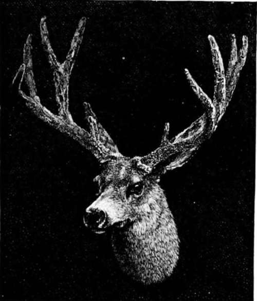

Camping And Hunting In The Shoshone. Part 8
Description
This section is from the book "Hunting", by Archibald Rogers. Also available from Amazon: Hunting.
Camping And Hunting In The Shoshone. Part 8
I have used almost all sorts of rifles, and have satisfied myself that a good repeater is the arm, —more accurate than an express, hitting hard enough to kill anything, and having nine shots instead of two. Very little observation or reading will satisfy any one that the habits of game change considerably in a comparatively brief space of time. This is true of the grizzlies. Allowing for old hunters' exaggeration, and again allowing for the natural growth of the mythical, even in so far as it relates to Ursus horribilis, yet I think the modern grizzly is a more timid animal than his grandfather could have been. I have said it is not safe to depend on one of these animals retreating; but unless wounded, if a path of retreat is left him, he will almost invariably take it. In the evening, on a trail, old hunters say that he often shows fight sooner than get out of the way. I have only once met a large bear alone in the evening; and on that occasion I did not wait to watch his movements, but fortunately rolled him over, hitting him in the heart with a snap shot.
The common idea still is that, in the fall, bears go down the mountains after berries. Some, I suppose, do; whether it is owing to the occupation of the river and creek beds (the usual place where choke-cherries and plums grow thickest) by cattle or not, I cannot say, but certainly the biggest do not seem to go down at all. They live on grubs, and more especially on pine-nuts, breaking up the stores which that pretty and provident little fellow, the mountain squirrel, has laid by; and on his labor they grow very fat.
There is something to me beyond measure fascinating in hunting the grizzly, the hardest of all animals to approach, excepting perhaps the sheep; and the extreme difficulty of seeing him or finding him in the daylight, and the lonely haunts he has now retired to, make him more difficult to bring to bag than even the sheep. None seems in better keeping with his surroundings than he. It must be a poor, shallow nature that cannot enjoy the absolute stillness and perfect beauty of such evenings as the hunter must sometimes pass alone, when watching near a bait for bear.
One such experience I have especially in mind. What an evening it was, both for its beauty and its good-fortune! I think of it still as a red-letter day, and speak of it as "One from many singled out, One of those heavenly days that cannot die."
More than two thousand feet below, the head-waters of the Snake gather themselves, and in its infancy the great river sends up its baby murmur. Behind me, the giant heads of the Teton cut the rosy evening sky, sharp and clear, as does the last thousand feet of the Matterhorn. I was comfortably ensconced in the warm, brown pine-needles that smothered up the great knees of a gnarled nut-pine, whose roots offered me an arm-chair, and round me, for the space of two or three acres, the short, crisp greensward, that is only found where snow has lain for months previously, was spangled and starred all over with such blue and white and red mountain flowers as are nowhere else seen in this land.
I wish I had time and skill to write of those sweet mountain flowers; there is nothing quite so beautiful in any other Alpine land I know of, our mountains altogether outstripping the Swiss or Austrian Alps in the wealth, variety, and sweetness of their flora. I don't know anything of botany, I am ashamed to say; but we have counted wellnigh a hundred different flowers in bloom during one afternoon's tramp. Amid the lush green of the rich valleys great masses of harebell and borage and gentian carpet the ground. Here and there, beautifully contrasting with their fresh, vivid blue, wide plots of yellow, purple-centred sunflowers stoutly hold up their heads; while on the border-land of these flower-beds of nature, where the grass shortens in blade, and deepens to an intense shade of green, the delicate mountain lily, with its three pure-white petals, fading to the tenderest green at the centre, reaches its graceful height of some nine inches. All this one has abundant leisure to observe, as he sits well to windward, by the way, of the bait, — in this case a dead elk.
Black-tail Deer.
On this occasion I occupied an unusually good point of vantage. My armchair not only commanded a little sloping prairie, but the heads of two deep ravines leading to it, and the crest of the ridge, some three hundred feet above me, to my left. Hour after hour passed peacefully by. I tried to read Tennyson (I had a pocket volume with me), with but poor success, and so gave myself up to the beauty of the scene. I realized, without effort, what a blissful thing it might be — nay, sometimes is — simply to exist. Such hours do not come to any of us often; but when they do, with them surely may come an overmastering sense of that great truth Elizabeth Barrett Browning so tersely puts —
"Earth's crammed with heaven, And every common bush afire with God; But only he who sees takes off his shoes."
Without cant, I trust, that evening I took off mine, as the old prayer came to mind : "We thank Thee for our creation, preservation, and all the blessings of this life."
I was in a state of stable equilibrium, bodily and mentally (if it ever is given to a rector of a New York church so to be), when a mighty rumpus arose from the edge of the dark woods where our horses were lariatted, two or three hundred yards below. On his way upward, a big grizzly had been joined by a relative or acquaintance (history will never say which); and, as ill-luck would have it, they both came suddenly on the horses, hidden and securely tied in a little hollow. From where I sat I could see nothing; but running down a few yards I came in sight of two sturdy fellows surveying our plunging nags, as for one moment they evidently held a hurried consultation. The conclusion they arrived at was that they were out for venison, not for horse-flesh, especially when there was more than a suspicion of a dangerous smell around; in brief, they struck our trail, and scented the saddle, and so in an instant were off. Of course, we had settled on a spot toward which the wind blew from the ravine (Frank was a quarter of a mile away on the other side of the prairie); for bears almost always come up at evening from the deepest hiding-places; and these bears ran off, quartering upwind, giving me a long, running shot, as they made great time among the tall, rank grass and flowers.
Continue to:
- prev: Camping And Hunting In The Shoshone. Part 7
- Table of Contents
- next: Camping And Hunting In The Shoshone. Part 9